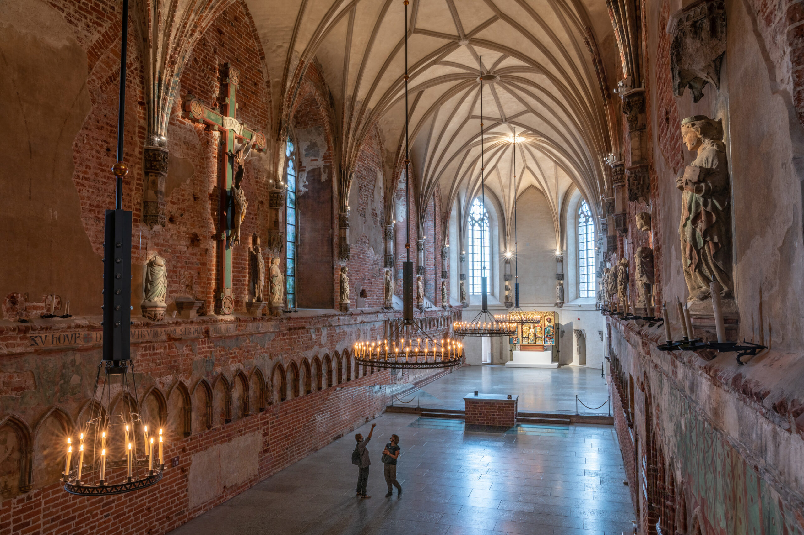
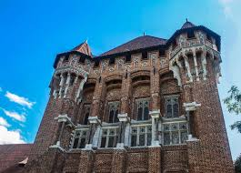
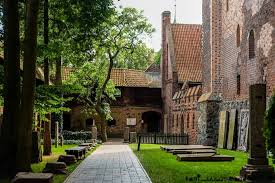
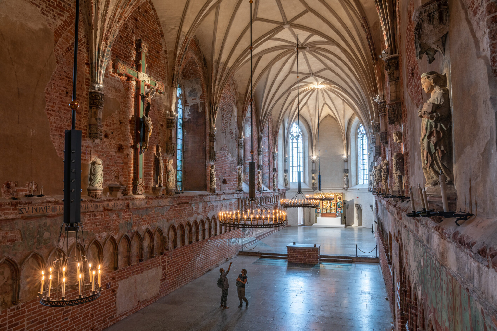
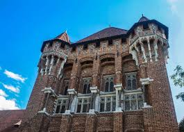
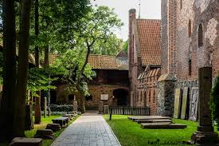

Nestled within the imposing walls of Malbork Castle lies a
hidden gem of tranquility and beauty: the castle gardens. As visitors pass
through the grand gates and venture beyond the sturdy fortifications,
they are greeted by a serene oasis, a verdant retreat that offers respite from the formidable
stone structures that dominate the skyline.
Malbork Castle, a monumental red-brick fortress,
dominates the Polish landscape with its towering walls and stout towers.
It's main entrance, adorned with intricate carvings and the emblem of the
Teutonic Order, leads into a grand courtyard surrounded by Gothic buildings
and soaring spires. Defensive walls and bastions encircle the castle,
offering panoramic views of the surrounding countryside and a glimpse into its
storied past as a formidable stronghold.
Inside Malbork Castle, Gothic architecture reigns supreme.
The Great Hall impresses with its lofty ceilings and tapestry-adorned walls,
while chapels offer moments of quiet reflection amidst stained glass brilliance.
Everywhere, the castle resonates with centuries of history, from the noble living
quarters to the echoing chambers of the dungeon, each corner a testament to the enduring
legacy of this medieval stronghold.